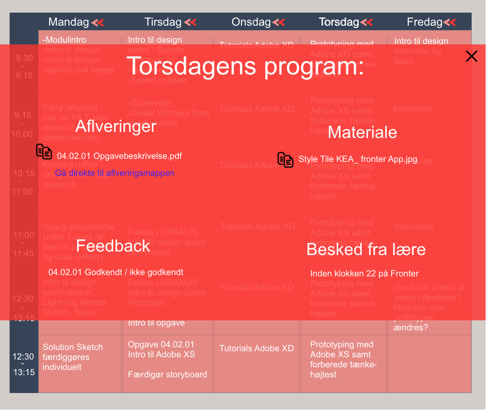
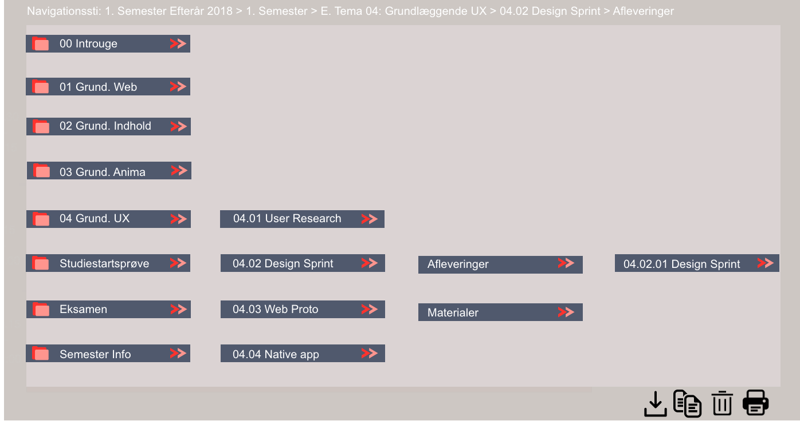

Torsdag d.6/12 har jeg fået til opgave, at aflevere en ny prototype til et nyt Fronter fremstillet i Adobe XD. Ifølge mange kilder har fronter brug for, at forbedre sin brugervenlighed. Herunder bliver der snakket om Fronters features, funktionalitet, landig pages mm. Tryk på skemaet herunder, og kom direkte til prototypen.
Decide
- ”Om 2 år er fronter de studerenes foretrukne værktøj til at understøtte undervisning aktiviteter.”
- ”Hvordan sikre vi, at de studerende får besked, når der tages beslutninger af undervisere, der har betydning for deres aktiviteter?”
- ”Hvordan kan vi vise dagens personlige program for de studerende?”
- ”Hvordan kan vi gøre det nemt, at se de andre studerendes afleveringer/arbejde/online-aktiviteter?”
- Samlet er vi kommet frem til, at det vigtigste er, vise dagens personlige program for de studerende.
- Forsiden skal bestå af studieretnings skema fra mandag til fredag.
- Ved tryk på en tilfældig ugedag, skal baggrunden sløres, og en boks skal tydeliggøres. Denne boks skal indeholde dagens vigtigste aktiviteter. Såsom dagens afleveringer, lektier, noter fra lærerne, direkte links til PowerPoints mm.


- Fronters nuværende mappefordeling er opdelt sådan, at ”mapperne” forsvinder under hinanden når man trykker sig ind på dem. Dette har jeg prøvet at løse med denne funktion.